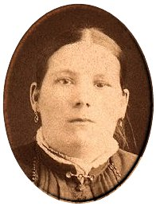
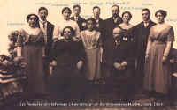

|

ALPHONSE AND ROSIANNE
Alphonse
Charette is born on September 14, 1850, in Saint-Jérôme, in the
Pays d'en-Haut, where his parents, Jacques
and Théotiste Dubois, had settled after their
marriage. He is the eighth of sixteen children. His godparents are
Jean-Baptiste Bériault and Rosalie Charette.
Jacques, a farmer and day labourer, often works away from home, since
the note "père absent" (father absent) is added to
the baptism record of his son Alphonse, and of nearly all his
children. Around 1853 the family moves to Saint-Sauveur, and
around 1870 to Saint-Henri-des-Tanneries. |
Rosianne Miron
is born on May 15, 1856, in Montréal, Notre-Dame parish. Her
parents, Antoine and Angèle Pichette, had married on August
2, 1841, in Saint-Jean-sur-Richelieu. Her godparents are Michel
Larose and Dorothée Miron, the child's paternal uncle and aunt.
We know of three brothers of Rosianne, Antoine Jr., Félix and Léonard, and one sister,
Philomène. Their father Antoine dies on (...) and their mother
Angèle remarries on April 17, 1865, in Montréal, a widower
with several children, Louis Casavant. Note that he
is also the brother-in-law of Angèle's son: Antoine Miron Jr. had married Julie Casavant, Louis's sister, a year earlier. |

| On Tuesday, February
25, 1873, in the church of Saint-Joseph parish, rue
Richmond in Montréal, Alphonse Charette marries Rosianne Miron.
The groom's witness is his father Jacques, and the
bride's is her stepfather Louis Casavant. Alphonse is twenty-two
and Rosianne sixteen. Neither of them can sign the
marriage record.  The
young couple moves in with Alphonse's parents, in
Saint-Henri-des-Tanneries, at 1100 rue Saint-Antoine. Also living in this
flat are Alphonse's youngest brothers and sisters
and, now and then, an uncle or another relative
"boards" there for a while. So one can
speak of a family clan. People are
used to "squeezing in"; privacy is out of the question.
It is only in 1880 that Alphonse and Rosianne and their children
move into the flat next door, at 1098 Saint-Antoine.
It should be said that 1873, the year of Alphonse and
Rosianne's marriage (opposite), and
the years that follow are economically very hard. A banking
crash in the Austro-Hungarian empire strikes
the economy of the whole Western world. In Québec, the crisis leads to
the failure of three banks. In two years, a thousand businesses and
shops close; the others cut
wages. Seventy thousand farmers lose their land,
swelling the flow of emigrants to the United States or the
ranks of unskilled unemployed crowding the
poor districts of Montréal. All this against the backdrop of a scandal
over a dubious
land-speculation deal in Saint-Henri-des-Tanneries, which will
bring down the government. |
| Alphonse works
as a mason. At first he works for others;
then, in his mid-forties, he becomes a masonry contractor. The first mention of this
appears in the Lovell street directory of 1894. He builds
many cut-stone houses, and even churches and
other buildings.
He also builds
a fine big stone house for his family at 1106
rue Saint-Antoine. They move in in 1895, and little by little it becomes
the house of the Pater Familias, a role
Alphonse fills happily, since he is clearly
very proud of his family.
 This house is the setting
for countless family gatherings to mark the happy
and the sad moments. It is said that the basement is specially fitted out; Alphonse even puts in a
complete kitchen there to make things easier for the women, who can cook in comfort while staying
"with the company".
The table is big enough to seat as many people as possible.
There is a piano, others
play the fiddle, and people
have a good time at these parties. They sing, dance and play
cards. Alphonse and Rosianne love to gather
family and friends around them and to entertain them well. (Story
passed on by Ghislaine, who heard it from Rita and Fleurette
Lavoie, Rosario's cousins)
In
addition to his trade, Alphonse gradually becomes an
important property owner in Saint-Henri. He owns
several apartment blocks; he looks after
managing and maintaining them and the well-being of
his tenants. In the marriage records of two of his sons, in 1907, Alphonse is listed as a "bourgeois" (a man of property).
In the census of
1911 he declares himself a "rentier" (living on his income). In the same
census several of his children, then
newly married, are living in flats next to his. It
is fair to say that Alphonse and Rosianne, despite their lack
of schooling and the hardships they faced, built an
enviable family and financial comfort. Alphonse
dies on April 25, 1919.
In 1928 the city changes the street
numbering, and 1106 becomes 4230 rue Saint-Antoine. Rosianne
lives there until her death on April 26, 1935. |
|
THE
DESCENDANTS OF ALPHONSE AND ROSIANNE |
Alphonse is born on
February 13, 1874, in Saint-Henri. His godfather is Charles
Charette, his father's eldest brother, and his godmother
Théotiste Dubois, his paternal grandmother.
He marries Marie Lavoie, daughter of Olivier and Anastasie Lortie,
on May 15, 1893, in Saint-Henri. He dies on July 9, 1916, in
Saint-Henri. Alphonse is
our ancestor of the 9th generation. |
Louis is born on
June 12, 1875, in Saint-Henri. His godfather is Louis Casavant, his
mother's stepfather, and his godmother Angèle Pichette, his
maternal grandmother.
He dies on January 28, 1880, in Saint-Henri. |
Rose Anna is born
on April 2, 1877, in Saint-Henri. Her godfather is Antoine Miron
Jr., her mother's brother, and her godmother Julie Casavant, his
wife.
She marries Aldéric Lavoie, son of Olivier and Anastasie
Lortie, on July 30, 1901, in Saint-Henri.
She dies on March 19, 1939, in Saint-Henri. |
Emelia is born on
January 20, 1879, in Saint-Henri. Her godfather is Louis Dupuis and
her godmother Philomène Miron, her mother's sister.
She is a disabled child, judging by the only photo
we have of her as a little girl. She dies on October 1,
1909; two priests are witnesses on her burial
record. |
Alexina is born on
January 19, 1882, in Saint-Henri. Her godfather is Wilfrid Matte and
her godmother Alphonsine Charette.
She marries Louis Latulippe, son of Basile and Cazildée
Clairmont, on May 16, 1905, in Saint-Henri. In the 1911 census
they live at 1098 Saint-Antoine; Louis is a carpenter. Alexina's
brother Arthur and his wife live with them. Each
couple has one child.
She is buried on December 19, 1955, in Montréal. |
Émile is born on December
7, 1883, in Saint-Henri. His godfather is Léonard Miron,
his mother's brother, and his godmother Cléophée Therrien, Léonard's
wife.
He dies on November 30, 1888, in Saint-Henri. |
Arthur is born on
September 23, 1885, in Saint-Henri. His godfather is Joseph
Bouffard and his godmother Edesse Charette, the child's uncle and aunt
on his father's side.
He marries Bernadette Prieur, daughter of Guillaume and
Marie-Anne Custin, on May 14, 1907, in
Saint-Télesphore-de-Soulanges. In the 1911 census the couple
lives with Arthur's sister Alexina and her husband Louis
Latulippe, at 1098 Saint-Antoine. Arthur is an accountant. He goes by
the name, and signs,
"Joseph Arthur".
He dies on March 1, 1968, and is buried on March 4 in
Montréal. |
Oscar is born on November
18, 1887, in Saint-Henri. He is baptized under the name
Hector, but has his name changed by the Superior Court on
May 2, 1956. His godfather is Joseph Charette and his godmother
Sarah Brière, the child's uncle and aunt on his father's side.
He marries Delerina Cromp, daughter of Élie and Euphrésine
Massé, in Pointe-Saint-Charles on May 13, 1907. Oscar is
a butcher in Saint-Henri according to his marriage record.
He dies on January 12, 1965, in Montréal. He is the only one,
with his sister Mary, not buried in plot R-1539
of the Côte-des-Neiges cemetery. |
Ernest is born on August
2, 1890, in Saint-Henri. His godfather is Cyrille Rousseau and
his godmother Élizabeth Charette, the child's uncle and aunt on his
father's side.
He marries Yvonne Guay, daughter of Wilfrid and Éxilda Dulude, on
June 20, 1910, in Montréal. In the 1911 census they live
at 1100 Saint-Antoine; Ernest is a butcher.
He dies on June 8, 1947, in Verdun. |
Lumina is born on
December 10, 1890, in Saint-Henri. Her godfather is Henri Rousseau
and her godmother Hélène Charette, the child's uncle and aunt on her
father's side.
She marries Paul Palardy, son of Napoléon and Malvina
Fontaine, on February 22, 1922, in Saint-Henri. According to the
Lovell street directories, the couple lived for a while with
the widowed Rosianne at 1106 Saint-Antoine.
She is buried on July 13, 1964, in Montréal. |
Mary is born on July
12, 1892, in Saint-Henri. Her godfather is her eldest brother
Alphonse and her godmother Marie Lavoie. She is baptized
Marie, but goes by Mary all her life.
She marries Adrien Prieur, son of Guillaume and Marie-Anne
Custin, on January 18, 1916, in Saint-Henri. Adrien is
a farmer in Saint-Télesphore-de-Soulanges, so Mary followed
her husband to that village. We have photos annotated on
the back: "chez Mary, St-Télesphore" (at Mary's, St-Télesphore).
We do not know the year of her death; she is the only one, with
her brother Oscar, not buried in plot R-1539 of the
Côte-des-Neiges cemetery. She is probably buried with her
husband in Saint-Télesphore-de-Soulanges |
Aldéric is born on
September 22, 1895, in Saint-Henri. His godfather is Aldéric
Lavoie and his godmother Rose Anna Charette, his eldest sister.
He marries Marie-Louise Houle, daughter of Alphonse and Marie
Davignon, on June 11, 1917, in Saint-Henri.
He is buried on September 20, 1968, in Montréal. |
Irène is born on April
6, 1897, in Saint-Henri. Her godfather is Hormidas Berthelot and
her godmother Mélina Trudeau.
She never marries and lives with her mother, whom she
looks after. Irène "had a
hunchback; she was cheerful and played with the children, unlike her sister
Lumina, who was grumpier". (Story
passed on by Ghislaine, who heard it from Rita and Fleurette
Lavoie, Rosario's cousins)
She is buried on January 21, 1949, in Montréal. |

|
|